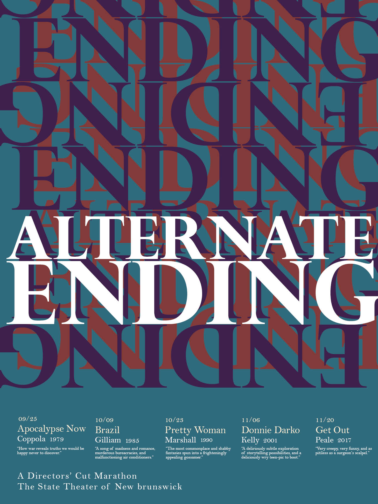

Alternate Ending
Poster Design
December 2018
18"x24"
Alternate Ending is a promotional poster for a film festival centering on films with conflicting director and audience cuts as a way of shining light on the difficulty of creating art that does not promote happy endings for viewers. The films included in the lineup are Apocalypse Now (1979 Coppola), Brazil (1985, Gilliam), Pretty Woman (1990, Marshall), Donnie Darko (2001, Kelly), and Get Out (2017, Peale).
